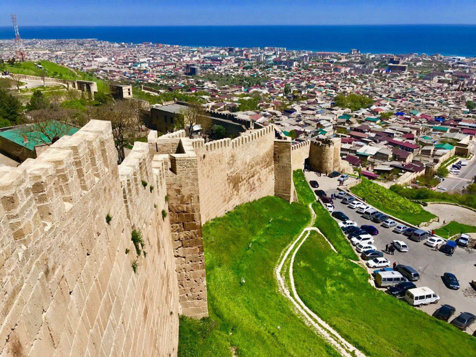
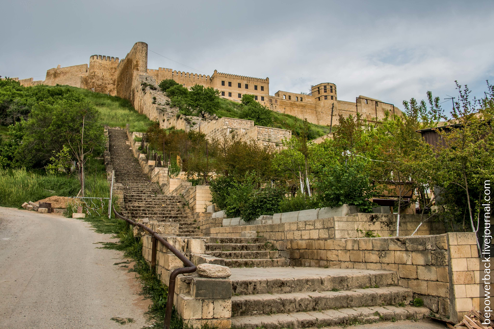
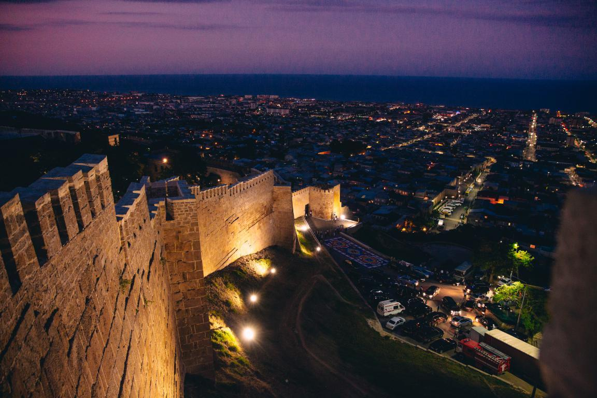

Tourism.
EXPLORE THE
DERBENT CITY
Дербент - один из древнейших и красивейших городов Северного Кавказа. Поселения на данной территории существовали более 5000 лет назад.
Photo
Архитектурные памятники города - чудеса рукотворные, воплотившие в себя, по меньшей мере, пять тысячелетий человеческой истории от самых ранних предметов албанского (античного) периода до новейших достижений современного зодчества.



Дербент Live
Дербент - один из древнейших и красивейших городов Северного Кавказа. Его история теряется во мраке веков, но, выстояв перед безжалостными ураганами времени, вопреки многочисленным разрушениям, Дербент во многом сохранил свой облик до наших дней.